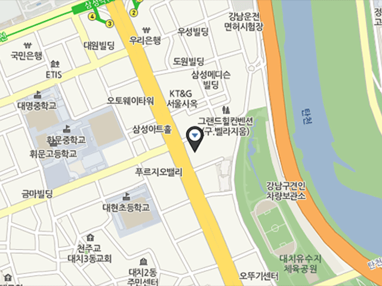

센터상세 레이어팝업 호출
BMW 드라이빙 센터 패스트레인 서비스 센터 (바바리안 모터스)

- 주소서울특별시 서초구 양재대로 11길 36
서울오토갤러리 금관 1층
- 전화번호02-586-3331
- 영업시간
[평일] 08:30~18:30
[주말/공휴일] 09:00~16:00
매월 2주, 4주차 토요일만 운영
- 홈페이지 바로가기http://www.samchullymotors.co.kr
-
- 서비스 목록
- 픽업 & 딜리버리
- 서비스 안됨셔틀 서비스
- 에어포트 서비스
- 로너카
- 전기차 충전기
- 긴급출동 서비스